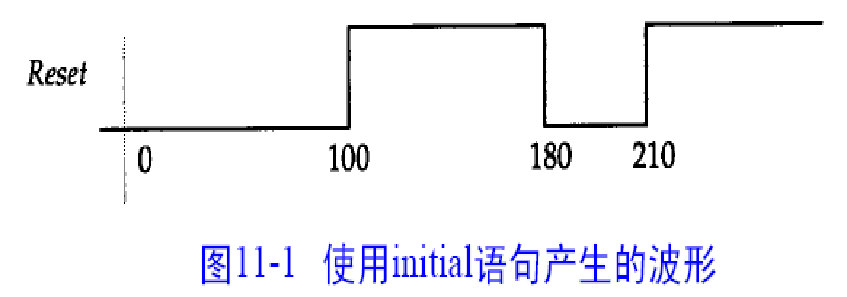
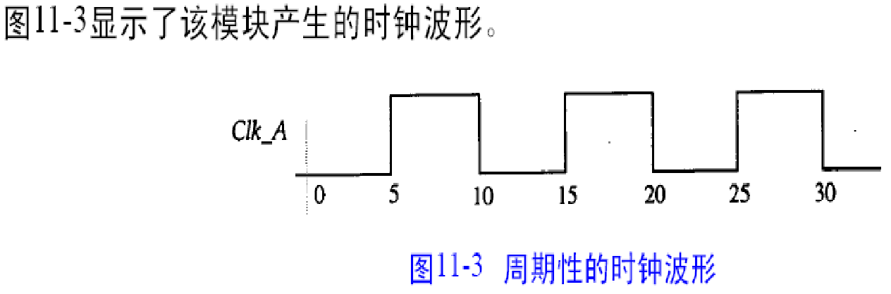

需要掌握：
Verilog的基本语法
FPGA设计工具Vivado的使用
组合逻辑与时序逻辑电路的设计
三段状态机的设计
Uart接口电路的实现
源码编辑软件：可选Notepad++
仿真工具：Vivado 2021.1
综合工具：Vivado 2021.1
FPGA设备： XILINX公司的NEXYS A7
Verilog是什么：
Verilog是一种硬件描述语言（HDL），用于设计数字电路和系统。它是一种编程语言，用于描述电路和系统的行为、结构和功能。Verilog最初由美国自动化控制协会（IEEE）于1984年开发，目的是提供一种标准的描述数字电路的语言。
Verilog可以用于设计各种数字电路和系统，包括集成电路（IC）、现场可编程门阵列（FPGA）、数字信号处理器（DSP）和嵌入式系统等。它的主要优点是具有高层次的抽象性和可重用性，可以大大简化数字电路的设计过程。
Verilog的语法类似于C语言，它包括一系列的关键字、数据类型、运算符、控制结构和模块等元素。设计人员可以使用这些元素来描述电路和系统的行为和结构。Verilog的代码可以使用各种EDA（Electronic Design Automation）工具进行仿真、综合和布局布线等，从而实现电路的验证和实现。
EDA: Electronic Design Automation 电子设计自动化 HDL: Hardware Description Language 硬件描述语言 FPGA: Field Programmable Gate Array 现场可编程门阵列 ASIC: Application Specific Integrated Circuit 专用集成电路 RTL: Register Transfer Level 寄存器传输级 HLS: High Level Synthesis 高层次综合
(Levels of Abstraction)
行为级：有关行为和技术指标模块，逻辑容易理解； RTL级：有关逻辑执行步骤的模块，逻辑较难理解； 门级：有关逻辑部件互相连接的模块。逻辑很难理解； 开关级：有关物理形状和布局参数的模块，逻辑非常难理解。
Verilog可以在三种抽象级上进行描述 ◆行为级 用功能块之间的数据流对系统进行描述 在需要时在函数块之间进行调度赋值。 ◆RTL级 用功能块内部或功能块之间的数据流和控制信号描述系统 基于一个已定义的时钟的周期来定义系统模型 ◆门级 用基本单元(primitive)或低层元件(component)的连接来描述系统以得到更高的精确性 在综合时用特定工艺和低层元件将RTL描述映射到门级网表
组合逻辑基础单元
and: 与门 or: 或门 not: 非门 nand: 与非门 nor: 或非门 xor: 异或门 xnor: 异或非门 buf: 缓冲器
D触发器：时序逻辑基础单元
注意：
绝对存在延迟
绝对不存在完美的方波
https://pan.baidu.com/s/1L1zwc3-aQ-_mAdA0FNTX4w 提取码：dtid 或者官网https://china.xilinx.com/support/download.html
第一步，解压，管理员模式打开 Setup.exe。 第二步，点击 Next，选择 Vitis。 第三步，勾选 7 Series继续完成安装。 第四步，打开 Vivado License Manager， 点击Load License，选vivado_lic2037.lic。 注意：要预留100G空间。
https://gitee.com/lzj_cse/cryptographic-hardware-engineering https://space.bilibili.com/6876595/channel/series
module 是层次化设计的基本构件，逻辑描述放在module内部
module能够表示：
物理块，如IC或ASIC单元
逻辑块，如一个CPU设计的ALU部分
整个系统
每一个模块的描述从关键词module开始，有一个名称（如SN74LS74，DFF，ALU等等），由关键词endmodule结束。
模块通过端口与外部通信
端口在模块名字后的括号中列出
端口等价于硬件的引脚(pin)
端口可以说明为input,output及inout
Verilog 模块的结构由在module和endmodule关键词之间的四个主要部分组成：
端口信息： module combination(a, b, c, d );
输入/输出说明 ： input a, b, c ; output d ; // 输入/输出端口信号类型声明，缺省为wire型 ：
内部信号： wire x;
功能定义： assign d = a | x ; assign x = ( b & ~c );
模块结束：endmodule
以下是一个简单的Verilog代码示例，用于实现一个4位二进制加法器：
x1module adder(input [3:0] a, input [3:0] b, output [3:0] sum);2
3 wire c0, c1, c2;4
5 assign c0 a[0] b[0];6 assign c1 a[1] b[1] a[1] c0 b[1] c0;7 assign c2 a[2] b[2] a[2] c1 b[2] c1;8
9 assign sum[0] a[0] b[0] c0;10 assign sum[1] a[1] b[1] c1;11 assign sum[2] a[2] b[2] c2;12 assign sum[3] a[3] b[3] ((a[2] b[2]) (a[1] b[1] c0) (a[0] b[0] c1));13
14endmodule15
在这个例子中，module关键字用于定义一个模块，模块名为adder。输入参数a和b是4位二进制数，输出参数sum也是4位二进制数。
wire关键字用于定义了3个中间信号c0、c1和c2，这些信号用于保存加法器的进位位。
assign关键字用于定义了各个输出信号的值。例如，assign c0 = a[0] & b[0]表示c0的值等于输入a和b的最低位相加的进位位。
这个例子中使用了逻辑运算符&、|和^，它们分别表示与、或和异或运算。Verilog还支持其他逻辑运算符、位运算符、比较运算符和算术运算符等。
在Verilog中，[3:0]表示一个向量或者一个位域（bit field），它是一个数据类型，可以表示一个二进制数字或者一组二进制数字。
在这个例子中，[3:0]用于定义了一个4位的向量或者位域。向量中的每一位都可以用一个数字来表示，数字的范围是从左到右，从高位到低位，分别是3、2、1、0。所以[3:0]可以表示从高位到低位的4个二进制数字。例如，input [3:0] a表示输入参数a是一个4位的向量或者位域。
在Verilog中，可以使用向量或者位域来表示多个信号，这样可以简化代码并提高可读性。例如，在上面的Verilog代码示例中，output [3:0] sum表示输出参数sum也是一个4位的向量或者位域，可以同时输出4个二进制数字。
那 [7:0] 是不是表示八位二进制数字？
是的，[7:0]表示一个8位的向量或者位域，它可以表示8个二进制数字，其中7是高位，0是低位。在Verilog中，通常使用[n-1:0]来表示一个n位的向量或者位域，其中n是向量或位域的宽度。所以，[7:0]可以表示8个二进制数字，也就是一个8位二进制数，其中最高位是第7位，最低位是第0位。
在Verilog中能否不用[3:0] 显式的指明变量的位宽？
在Verilog中，如果您在声明信号时没有明确指定它的位宽，那么信号的默认位宽为1位。但是，为了保证代码的可读性和可维护性，建议您显式地指定变量的位宽，以避免因为不同编译器的解释差异而导致的错误。
如果您需要使用一个不定长的信号，您可以使用SystemVerilog中的logic类型，该类型可以根据需要自动调整位宽。例如，您可以声明一个未指定位宽的logic类型信号如下：
xxxxxxxxxx11logic data;
这样声明的data信号可以根据需要自动调整位宽。但是需要注意的是，logic类型在Verilog中不是原生支持的，如果您使用的是纯Verilog语言，建议仍然显式地指定信号的位宽。
在Verilog中，您可以使用方括号指定信号的位宽。例如，如果您需要声明一个4位宽的信号，可以使用如下语法：
xxxxxxxxxx11reg [3:0] my_signal;
这将创建一个名为my_signal的寄存器变量，它有4位宽。方括号中的3表示信号的最高位，0表示信号的最低位。因此，这个例子中的信号是一个4位的向量，其中最高位为第4位，最低位为第1位。
如果您想声明多个信号，可以将它们放在一个逗号分隔的列表中：
xxxxxxxxxx11reg [3:0] signal1, signal2, signal3;
这将声明三个4位宽的寄存器变量signal1、signal2和signal3。
xxxxxxxxxx141module mux2to1 (2 out,3 a,4 b,5 sel6);7
8 input a, b, sel;9 output out;10 wire out;11
12 assign out (sel) b : a;13
14endmodule
xxxxxxxxxx141module mux2to1 (out, a, b, sel);2 input a, b, sel;3 output out;4 reg out;5 6 always @(sel or a or b) begin7 if (sel) begin8 out a;9 end10 else begin11 out b;12 end13 end14endmodule
在Verilog中，begin 和 end 用来组成代码块，不需要使用大括号 {}。例如：
xxxxxxxxxx41always @ (posedge clk)2begin3// some code here4end
需要注意的是，begin 和 end 必须成对出现，并且一个 begin 后必须有一个对应的 end。
在 Verilog 中，实例化是指将一个模块作为一个实体在另一个模块中使用。实例化可以在同一个文件中或者在不同的文件中进行。被实例化的模块可以是预定义的标准模块，也可以是用户定义的模块。
通过实例化，我们可以将大型的系统划分为多个模块，每个模块都有特定的功能，然后将这些模块连接在一起以形成完整的系统。这种模块化的设计使得系统更容易维护、扩展和测试。
在 Verilog 中，实例化的语法是在一个模块中使用一个例化名字来实例化另一个模块，如下所示：
xxxxxxxxxx81module top_module();2sub_module sub1();3sub_module sub2();4endmodule5module sub_module();7// sub_module implementation8endmodule
在上面的例子中，top_module 实例化了两个 sub_module 模块，分别命名为 sub1 和 sub2。
xxxxxxxxxx101module mux2to1 (out, a, b, sl);2 input a, b, sl;3 output out;4 5 not u1 (nsl, sl);6 and u2 (sela, a, nsl);7 and u3 (selb, b, sl);8 or u4 (out, sela, selb);9 10endmodule在这个代码中，我们定义了一个名为 mux2to1 的模块，它有4个端口：一个输出端口 out，两个输入端口 a 和 b，以及一个选择器端口 sl。
接下来，我们使用以下语法实例化了四个逻辑门：
not u1 (nsl, sl);：这行代码实例化了一个非门，并将其命名为 u1。该非门有2个端口：一个输入端口 sl，一个输出端口 nsl。它对 sl 端口的输入取反，并将结果输出到 nsl 端口。
and u2 (sela, a, nsl);：这行代码实例化了一个与门，并将其命名为 u2。该与门有3个端口：两个输入端口 a 和 nsl，一个输出端口 sela。它将 a 和 nsl 端口的输入做逻辑与运算，并将结果输出到 sela 端口。
and u3 (selb, b, sl);：这行代码实例化了另一个与门，并将其命名为 u3。该与门有3个端口：两个输入端口 b 和 sl，一个输出端口 selb。它将 b 和 sl 端口的输入做逻辑与运算，并将结果输出到 selb 端口。
or u4 (out, sela, selb);：这行代码实例化了一个或门，并将其命名为 u4。该或门有3个端口：两个输入端口 sela 和 selb，一个输出端口 out。它将 sela 和 selb 端口的输入做逻辑或运算，并将结果输出到 out 端口。
最后，我们在模块中定义了这四个逻辑门的实例，并将它们连接在一起，实现了一个 2:1 的多路复用器。
注意：
多路复用器（Multiplexer，简称 MUX）是一种电路组件，可以将多个输入信号中的其中一个输出到单一的输出端口，以满足复杂的逻辑控制需求。 例如，一个4:1的多路复用器可以有4个输入和1个输出，其中控制信号用于选择哪个输入信号将被传输到输出。因此，我们可以通过多路复用器来实现多个信号的复用和切换。
而在这个例子中，我们实现的是 2:1 的两路选择器，它只有两个输入信号，因此也可以看作是一种多路复用器的特例。
空白符：空格、tabs及换行
标志符(Identifier)：Verilog中对象(如模块或信号)的名字
LSB：最低有效位(Lease significant bit)
MSB：最高有效位(Most significant bit)
在Verilog中，有两种常用的注释方式：
单行注释：以双斜杠 // 开头，直到该行结束为止的内容都被视为注释。例如：
xxxxxxxxxx11// This is a single-line comment in Verilog.
块注释：以 /* 开始，以 */ 结尾的一段内容都被视为注释。可以跨越多行。例如：
xxxxxxxxxx31/* This is a2multi-line comment3in Verilog. */
在注释中，你可以写入任何你认为有必要记录的信息，如设计说明、编写者、修改历史、版本号等等。注释对于代码的可读性和可维护性都非常重要，可以帮助其他开发者更容易地理解你的代码和意图，也方便自己日后查看和修改代码。
Verilog是格式自由的。
使用空白符提高可读性及代码组织。Verilog忽略空白符除非用于分开其它的语言标记。
Verilog采用的是四值逻辑系统，也就是逻辑值不仅包括0和1，还包括X和Z两个特殊的逻辑值。这个系统与传统的二值逻辑系统（只包含0和1）不同，它可以更好地表示数字电路中的不确定性和高阻态。下面是四个逻辑值的含义：
0：逻辑低，表示接地或关闭状态。
1：逻辑高，表示接通或高电平状态。
X：不确定或未知的逻辑值，表示输入或输出信号的值不能确定或没有被定义。X值通常用于模拟仿真和验证中的错误检测和故障模拟。
Z：高阻态或无效的逻辑值，表示输入或输出信号的值未被连接或被连接到高阻态。Z值通常用于模拟仿真和验证中的模拟开路和故障检测。
需要注意的是，四值逻辑系统并不适用于所有数字电路设计，特别是对于门电路和低层次的数字电路设计，二值逻辑系统依然是更常用的。在实现数字电路时，需要根据具体需求和电路特性选择合适的逻辑系统。
在 Verilog 中，0 和 1 分别表示逻辑“低”和“高”电平，而 X 和 Z 则是特殊的逻辑值，分别表示“未知”和“高阻”。
X 表示的是逻辑值未知，可以理解为一个未确定的状态。在模拟电路时，如果有某些信号的值不能确定时，可以将其赋值为 X。比如在模拟设计中，某个信号在复位后的值是未知的，这时就可以将其赋值为 X，等到电路正常运行时再进行更新。
Z 则表示高阻状态，也称为“高阻态”或“悬浮态”，表示当前信号的状态处于一种不稳定的状态，可能被多个电路共享，导致电路出现问题。比如在总线上，如果多个设备同时输出信号，可能会出现冲突，此时需要将总线上的其他设备输出信号的状态设置为高阻，以避免干扰。
总的来说，0 和 1 是逻辑值，表示确定的电平状态；而 X 和 Z 则是特殊的值，表示不确定或不稳定的状态。
在Verilog中，可以使用整数常量和实数常量来表示数字值。这些常量可以用于初始化变量、参数和寄存器等。下面分别介绍一下Verilog中的整数常量和实数常量。
整数常量
Verilog中的整数常量可以用十进制、八进制、十六进制、二进制等表示。下面是一些示例：
xxxxxxxxxx418 // 十进制，表示数字82024 // 八进制，表示数字20（2 * 8 + 4 * 1 = 20）30x1A // 十六进制，表示数字26（1 * 16 + 10 * 1 = 26）44'b1010 // 二进制，表示数字10（4位二进制数1010对应的十进制数为10）
在Verilog中，整数常量可以用于初始化变量、参数和寄存器等。
实数常量
Verilog中的实数常量可以是定点数或浮点数。定点数使用小数点和指数来表示，而浮点数使用科学计数法表示。下面是一些示例：
xxxxxxxxxx313.1415 // 定点数，表示π26.02e23 // 浮点数，表示阿伏伽德罗常数3-1.23e-4 // 负数浮点数，表示-0.000123
在Verilog中，实数常量可以用于初始化变量、参数和寄存器等，也可以用于数字电路中的浮点运算。需要注意的是，Verilog中实数的精度是有限的，因此在设计数字电路时，需要特别注意数值的精度和舍入误差。
Verilog中，常量(literals)可是整数也可以是实数。
1.整数的大小可以定义也可以不定义。整数表示为：
size ：位数大小，由十进制数表示的位数(bit)表示。缺省为32位
base：数基，可为2(b)、8(o)、10(d)、16(h)进制。缺省为10进制
value：是所选数基内任意有效数字，包括 X、Z。
2.实数常量可以用十进制或科学表示法表示。
12 unsized decimal (zero-extended to 32 bits) ‘h83a unsized hexadecimal (zero- extended to 32 bits) 8'b1100 0001 8-bit binary 16'hff01 16-bit hexadecimal 32'bz01x Z-extended to 32 bits 3'b1010 1101 3-bit number, truncated to 3’b101 6.3 decimal notation 32e- 4 scientific notation for 0.0032 4.1E3 scientific notation for 4100
整数和实数常量小结
整数的大小可以定义也可以不定义
整数表示为：
数字中（_ ）忽略，便于查看
没有定义大小(size)整数缺省为32位 /特别注意/
缺省数基为十进制
数基(base)和数字(16进制)中的字母无大小写之分
当数值value大于指定的大小时，截去高位。如 2'b1101表示的是2'b01
实数常量
实数可用科学表示法或十进制表示
科学表示法表示方式：
不用管
在Verilog中，标识符是用来标识变量、模块、任务、函数、端口等各种元素的名称。以下是Verilog中标识符的一些规则：
标识符只能由字母、数字和下划线组成。
标识符必须以字母或下划线开头，不能以数字开头。
标识符的长度可以任意，但建议不要超过1024个字符。
标识符可以是大小写字母的任意组合，但在Verilog中，大小写字母被视为不同的字符。
Verilog中有一些保留字，不能用作标识符。例如always、module、input、output等等。保留字不能用作变量名、模块名、任务名、函数名、端口名等等。
标识符应具有一定的意义和描述性。例如，变量名可以表明其作用、模块名可以表明其功能等等。
Verilog的标识符区分大小写，因此变量名、模块名、任务名等应尽可能避免使用相同的名称但大小写不同的标识符。
总之，在编写Verilog代码时，应该遵守良好的命名规则，选择有意义、易于理解的标识符名称，以便于代码的阅读和维护。
Verilog区分大小写，所有Verilog关键词如module、endmodule等都使用小写字母。
Verilog HDL 有两大类数据类型。
线网类型(net type): 表示Verilog结构化元件间的物理连线。它的值由驱动元件的值决定，例如连续赋值或门的输出。如果没有驱动元件连接到线网，线网的缺省值为z。
寄存器类型(register type): 表示一个抽象的数据存储单元，它只能在always语句和initial语句等过程语句中被赋值，并且它的值从一个赋值到另一个赋值被保存下来。寄存器类型的变量具有x的缺省值。
Verilog采用的是四值逻辑系统，也就是逻辑值不仅包括0和1，还包括X和Z两个特殊的逻辑值。这个系统与传统的二值逻辑系统（只包含0和1）不同，它可以更好地表示数字电路中的不确定性和高阻态。下面是四个逻辑值的含义：
0：逻辑低，表示接地或关闭状态。
1：逻辑高，表示接通或高电平状态。
X：不确定或未知的逻辑值，表示输入或输出信号的值不能确定或没有被定义。X值通常用于模拟仿真和验证中的错误检测和故障模拟。
Z：高阻态或无效的逻辑值，表示输入或输出信号的值未被连接或被连接到高阻态。Z值通常用于模拟仿真和验证中的模拟开路和故障检测。
需要注意的是，四值逻辑系统并不适用于所有数字电路设计，特别是对于门电路和低层次的数字电路设计，二值逻辑系统依然是更常用的。在实现数字电路时，需要根据具体需求和电路特性选择合适的逻辑系统。
net需要被持续的驱动，驱动它的可以是门和模块。当net驱动器的值发生变化时， 新值被传送到net上。
在下例中，线网out由or门驱动。当or门的输入信号置位时将传输到线网net上。
线网数据类型-使用语法：
xxxxxxxxxx21//简单的线网类型说明语法为：2net_kind [msb:lsb] net1, netN;
net_kind 是上述线网类型的一种；
msb 和 lsb 是用于定义线网范围的常量表达式，如果没有定义，缺省为1位。
例子：
xxxxxxxxxx31wire rst, data; //1位的复位线和数据线。2wire [2:0] Addr1; //Addr1是3位地址线3wire [3:1] Addr2; //Addr2是3位地址线
线网型变量使用举例：两路选择器的RTL级描述
在Verilog中，RTL级别的描述通常包括时序逻辑、组合逻辑和寄存器等元素。
在设计数字电路时，RTL描述的目标是将设计映射到硬件电路中，从而实现指定的功能。RTL描述通常会定义电路中的信号、模块、数据通路和控制逻辑等，并使用Verilog语言描述各个元素之间的连接关系、逻辑关系和时序关系等。
xxxxxxxxxx61module mux2to1 (out, a, b, sel);2 input a, b, sel;3 output wire out;4 assign out (sel) b : a;5 // input a, b, sel没声明信号类型，缺省为 wire 型6endmodule
寄存器类有四种数据类型
| 寄存器类型 | 功能 |
|---|---|
| reg | 是最常用的寄存器类型 ,无符号型。 |
| integer | 32位有符号整数变量，算术操作产生二进制补码形式 的结果。通常用作不会由硬件实现的的数据处理。 |
| real | 双精度的带符号浮点变量，用法与integer相同。 |
| time | 64位无符号整数变量，用于仿真时间的保存与处理。 |
| realtime | 与real内容一致，但可以用作实数仿真时间的保存与处理。 |
reg是寄存器数据类型最常见的数据类型，使用语法形式如下：
xxxxxxxxxx11reg [msb: lsb] reg1,regN;msb和lsb 定义了范围，并且均为常数值表达式；如果没有定义范围，缺省值为1位寄存器。
xxxxxxxxxx41reg [3:0] counter1; // 4位寄存器2reg counter2; // 1位寄存器3reg [31:0] data_buffer1;4reg [32:1] data_buffer2; 在Verilog中，reg关键字用于声明寄存器类型变量，而方括号用于指定变量的位宽。
对于reg [31:0] data_buffer1;，表示声明了一个32位的寄存器类型变量data_buffer1。其中方括号中的31表示最高位，0表示最低位。
而reg [32:1] data_buffer2;则表示声明了一个33位的寄存器类型变量data_buffer2，其中方括号中的32表示最高位，1表示最低位。注意，32:1中的位宽为32，但由于Verilog中索引从0开始，因此实际位宽为33，包括32位有效位和一位未使用的位。
因此，data_buffer1是一个32位寄存器，而data_buffer2是一个33位寄存器。
记住reg就足够了
同时注意到电路是不管有符号型或者无符号型的，符号是上层需要处理的问题
常见的寄存器类型： Integer
xxxxxxxxxx11integer A, B, C ; //三个整数型寄存器。
与reg不同，integer可以表示有符号数，并且算术操作符提供2的补码运算结果。
同时，如上例定义的A，B，C变量它们分别是32位（ 32-bit ）的寄存器变量。
寄存器型变量使用举例：两路选择器的RTL级描述
xxxxxxxxxx151module mux2to1 (out, a, b, sel);2 input a, b, sel;3 output out;4 reg out;5 6 always @ (sel or a or b) begin7 if (sel) begin8 out a;9 end10 else begin11 out b;12 end13 end14 //input a, b, sel没声明信号类型，缺省为wire型15endmodule
如何给模块端口信号选择正确的数据类型？
xxxxxxxxxx101module DUT (O, in1, in2);2 output O;3 input in1, in2;4 wire in1, in2;5 reg O;6 7 always @(in1 or in2)8 O in1 in2;9 10endmodule
参数是一个常量，定义时大写
语法：
xxxxxxxxxx11parameter <list_of_assignment>;
eg：
xxxxxxxxxx21parameter WIDTH 8'h20;2parameter BYTE 4'h8;参数（parameters)-使用举例
xxxxxxxxxx81module mod1(out, in1, in2);2 parameter WORD_WIDTH 8;3 wire [WORD_WIDTH1:0] in1; // A wire declaration using parameter4 // Other module statements here5 output out;6 input in2;7 // Other module statements here8endmodule参数（parameters)使用注意事项：
推荐：一般定义参数等常量名称用大写，变量名称用小写！
可一次定义多个参数，用逗号隔开。
参数的定义是局部的，只在当前模块中有效。
xxxxxxxxxx41parameter WORD_WIDTH = 32, ADDR_WIDTH = 8;2// 等同于：3parameter WORD_WIDTH = 32;4parameter ADDR_WIDTH = 8;
位选择从向量中抽取特定的位。
eg1：
xxxxxxxxxx71reg [31:0] Breg;2wire [31:0] Bwire;3// Other module statements here4assign Bwire /* Some logic to assign a value to Bwire */;5always @() begin6 Breg Bwire;7endeg2：
xxxxxxxxxx81reg [31:0] Breg;2wire [31:0] Bwire;3// Other module statements here4assign Bwire /* Some logic to assign a value to Bwire */;5always @() begin6 Breg[31:16] Bwire[15:0];7 Breg[15:0] Bwire[31:16];8end在这个例子中，Bwire 是一个 wire 类型的信号，而 Breg 是一个 reg 类型的信号。
使用 assign 语句对 Bwire 进行赋值，使用 always 块对 Breg 进行赋值。
具体地，将 Bwire 中的 [15:0] 比特取反并存储到 Breg 的 [31:16] 比特中，同时将 Bwire 中的 [31:16] 比特取反并存储到 Breg 的 [15:0] 比特中。
注意，在 always 块中使用的是非阻塞赋值（<=）而不是阻塞赋值（=），因为在 always 块中使用的是组合逻辑。
在 Verilog HDL 中，赋值语句有两种形式：阻塞赋值和非阻塞赋值。它们之间的区别在于赋值的行为和模拟的时间。
阻塞赋值（=）：
阻塞赋值语句的行为是在当前时间片结束之前执行。也就是说，阻塞赋值语句将在当前时间片中被完全执行，然后才会继续执行其他语句。这种方式使得赋值语句的执行顺序非常明确，因为它们按照源代码中的顺序执行。
下面是一个使用阻塞赋值的例子：
xxxxxxxxxx41always @(posedge clk) begin2a = b; // 阻塞赋值3c = a;4end在这个例子中，当时钟信号（clk）上升沿出现时，a 被赋值为 b，然后 c 被赋值为 a。
非阻塞赋值（<=）：
非阻塞赋值语句的行为是在下一个时间片开始时执行。也就是说，非阻塞赋值语句将在当前时间片结束时被计划执行，在下一个时间片开始时生效。这种方式可以模拟并发行为，因为所有非阻塞赋值语句都可以同时计划执行。
下面是一个使用非阻塞赋值的例子：
xxxxxxxxxx41always @(posedge clk) begin2b <= a; // 非阻塞赋值3c <= b;4end在这个例子中，当时钟信号（clk）上升沿出现时，b 被赋值为 a（但不会影响 c 的值），然后 c 被赋值为 b 的上一个值（即 a 的值）。
总之，阻塞赋值和非阻塞赋值之间的主要区别是执行时间和行为方式。阻塞赋值的行为是在当前时间片结束之前执行，而非阻塞赋值的行为是在下一个时间片开始时执行。
位选择注意事项
整数不能作为位向量访问。
例如定义了
xxxxxxxxxx11integer B;对于上面的整数B的说明，B[6]和B[20:10]是非法的。
解决办法：
一种截取位值的方法是将整数赋值给一般的reg类型变量，然后从中选取相应的位，如：
xxxxxxxxxx51integer Bint;2reg [31:0] Breg;3//由于Bint[6]和Bint[20:10]是不允许的。4Breg Bint; // 或 Breg <= Bint;5/*现在，Breg[6]和Breg[20:10]是允许的，并且所取具体值，是整数 Bint 相应的位值。*/
两种主要的信号类型：
寄存器类型：代表 reg——在always 等过程块中被赋值的信号，往往代表触发器，但不一定是触发器。（时序逻辑电路中常常被综合为D触发器 ；纯组合逻辑电路中被综合为连线）
连线类型：代表 wire——用 assign 关键词指定连续/持续赋值所描述的组合逻辑的信号或连线。
加
减
乘
除
模
将负数赋值给reg或其它无符号变量，使用2的补码算术
如果操作数的某一位是x或z，则结果为x
在整数除法中，余数舍弃
模运算中使用第一个操作数的符号
xxxxxxxxxx201module arithops_test;2 parameter FIVE 5;3 integer ans, int;4 reg [3:0] rega, regb;5 reg [3:0] num;6 7 initial begin8 rega 3;9 regb 4'b1010;10 int 3; // int = 1111......1111_110111 12 #10 ans FIVE int; // ans = -1513 #20 ans (int 5)2; // ans = 114 #30 ans FIVE int; // ans = -115 #50 num rega 1; // num = 010016 #60 num int; // num = 110117 #70 num regb rega; // num = 118 #80 ;19 end20endmodule这个 Verilog HDL 代码定义了一个名为 arithops_test 的模块。在这个模块中，有一些变量被声明，包括 FIVE、ans、int、rega、regb 和 num。
在 initial 块中，这些变量被赋值和计算。例如，rega 被赋值为 3，regb 被赋值为 10（二进制表示），int 被赋值为 -3，它的二进制表示是 1111...1111 1101。
然后，一些算术操作被执行，包括乘法、加法、除法、加一、赋值等等。这些操作的结果被存储在 ans 和 num 变量中。最后，$finish 函数被调用，结束了模拟过程。
这个模块演示了 Verilog HDL 中的一些算术运算符，包括乘法、加法、除法、取模和自增运算符。
注意integer和reg类型在算术运算时的差别。integer是有符号数，而reg是无符号数。
逻辑运算符例一 例如, 假定:
xxxxxxxxxx21Crd 1'b0; //0为假2Dgs 1'b1; //1为真那么:
xxxxxxxxxx31Crd Dgs //结果为0 (假)2Crd Dgs //结果为1 (真)3Dgs //结果为0 (假)
逻辑运算符例二 对于向量操作, 非0向量作为1处理。例如，假定:
xxxxxxxxxx21A 4'b0110;2B 4'b0100;那么:
xxxxxxxxxx21AB //结果为?2AB //结果为?并且:
xxxxxxxxxx11AB //结果相同,为什么？
按位操作符有：
~（一元非）
&（二元与）
|（二元或）
^（二元异或）
~^, ^~（二元异或非）
按位操作符例一 假定
xxxxxxxxxx21A 4'b0110;2B 4'b0100;那么:
xxxxxxxxxx81A B //结果为？2A B //结果为?3
4A B //结果为？ 5A B //结果为?6
7A8A
关系操作符有：
>（大于）
<（小于）
>=（不小于）
<=（不大于）
关系操作符的结果为真（ 1 ' b1）或假（ 1 ' b0）或1 ' bx
== 逻辑等
!= 逻辑不等
其结果是1’b1、1’b0或1’bx。
如果左边及右边为确定值，并且相等，则结果为1。
如果左边及右边为确定值，并且不相等，则结果为0。
如果左边及右边有值不能确定的位，但值确定的位相等，则结果为x。
!=的结果与= =相反
值确定是指所有的位为0或1。不确定值是有值为x或z的位。
xxxxxxxxxx151module equalities_test;2 reg [3:0] rega, regb, regc;3 reg val;4 5 initial begin6 rega 4'b0011;7 regb 4'b1010;8 regc 4'b1x10;9 10 #10 val (rega regb); // val = 011 #20 val (rega regc); // val = 112 #30 val (regb regc); // val = x13 #50 ;14 end15endmodule这个 Verilog HDL 代码定义了一个名为 equalities_test 的模块。在这个模块中，有三个 4 位寄存器 rega、regb 和 regc，以及一个 val 变量。
在 initial 块中，这些寄存器被赋值。其中，rega 被赋值为 3（二进制为 0011），regb 被赋值为 10（二进制为 1010），regc 被赋值为 1x10。
然后，三个比较操作被执行，使用了等于和不等于运算符。这些操作的结果被存储在 val 变量中。在第一个比较中，rega 不等于 regb，因此 val 被设置为 0。在第二个比较中，rega 等于 regc，因此 val 被设置为 1。在第三个比较中，regb 和 regc 不相等，但是 regc 的某些位是 x（未确定），因此比较结果为 x。
最后，$finish 函数被调用，结束了模拟过程。
条件操作符的语法为：
<LHS> = <condition> ? <true_expression> : <false_expression>;
其意思是：如果 condition 为 TRUE，则 LHS = true_expression，否则 LHS = false_expression。每个条件操作符必须有三个参数，缺少任何一个都会产生错误。最后一个操作数作为缺省值。
例如，对于以下代码：
xxxxxxxxxx11assign out = (sel == 0) ? a : b;
如果 sel 为 0，则 out = a；如果 sel 为 1，则 out = b；如果 sel 为 x 或 z，则结果可能为 x 或 z。
持续赋值只能对线网net型信号进行赋值。
语法格式：
xxxxxxxxxx11<assign> <net_name> <expressions>;举例
xxxxxxxxxx21wire out;2assign out a b; // 显式，推荐使用
xxxxxxxxxx71module mux2to1 (out, a, b, sel);2 input a, b, sel;3 output out;4 wire out;5 6 assign out (sel) b : a;7endmodule为什么不可以去掉assign ，直接使用out=(sel)?b:a; 赋值？
答案：去掉assign是可以描述电路功能。但是无法模拟出电路的不断刷新的动作。所以采用保留字assign，来模拟表达式左边信号out，随右边表达式信号sel、a或者b的变化，而不断刷新的动作！
另外：
实际上，使用 assign 语句来分配 reg 类型的值是不被推荐的，因为 assign 语句是用来分配 wire 类型的值。虽然在一些 Verilog 编译器中可以正常工作，但是在其他编译器中可能会产生未定义的行为。
因此，为了编写更清晰和可维护的代码，应该尽可能避免在 assign 语句中分配 reg 类型的值，而应该使用 always 块来分配 reg 类型的值。
在 Verilog 中，wire 和 reg 类型有不同的行为和用途。wire 类型通常用于连接模块中的输出和输入，而 reg 类型通常用于保存模块中的状态。
在模块输出中，如果将 reg 类型作为输出类型，则需要使用 always 块来更新该信号的值，因为 reg 类型的值只能在 always 块中分配。而 wire 类型的输出可以通过 assign 语句直接分配。
连续赋值语句如何刷新呢?
xxxxxxxxxx11assign out(sel)b:a;在上面的例子中，只要右边信号sel或a或b的值发生了改变，EDA工具提取assign保留字，映射成左边信号out能及时反应最新的逻辑结果。
用assign赋值反应出这种不断刷新的过程，让建模语句的描述与实际电路工作情况吻合！
xxxxxxxxxx31wire buserr, z;2assign buserr Parity (One OP) ;3assign buserr Parity (One OP) ;只要右边的信号A、B、C、D、E或F的值变化，右边整个表达式的逻辑将被刷新，结果Z将刷新为最新值。
在下一个例子中，目标是一个向量线网和一个标量线网的拼接结果。
xxxxxxxxxx41wire Cout, Cin ;2wire [3:0] Sum, A, B;3. . .4assign {Cout, Sum} A B Cin;因为A和B是4位宽，加操作的结果最大能够产生5位结果。左端表达式的长度指定为5位(Cout 1位，Sum 4位)。赋值语句因此促使右端表达式最右边的4位的结果赋给Sum，第5位(进位)赋给Cout。
标量线网
向量线网
线网向量的常数型一位选择
线网向量的常数型部分位选择
上述类型的任意的拼接运算结果
xxxxxxxxxx61module FA_Df (A, B, Cin, Sum, Cout ) ;2 input A, B, Cin;3 output Sum, Cout ;4 assign Cout(ACin)(BCin)(AB) ;5 assign Sum ABCin;6endmodule用连续赋值方式描述1位全加器 (cont.)
在本例中，有两个连续赋值语句：
xxxxxxxxxx21assign Sum ABCin;2assign Cout(ACin)(BCin)(AB) ;这两个赋值语句是并行执行的，与其书写的顺序无关。只要信号A或者B或者Cin任何一个信号发生改变，和信号Sum与高位进位信号Cout 的值就会立即相应的进行刷新，跟代码的前后顺序无关。
正确表达：
xxxxxxxxxx61module mux4to1_right (MUX1, a, b, c, d, sel);2 output MUX1;3 input a, b, c, d;4 input [1:0] sel;5 assign MUX1 (sel 2'b00) a : ((sel 2'b01) b : ((sel 2'b10) c : d));6endmodule错误表达：
xxxxxxxxxx91module mux4to1_wrong (MUX2, a, b, c, d, sel1, sel2);2 input a, b, c, d;3 input sel1, sel2;4 output MUX2;5 wire MUX2;6 7 assign MUX2 (sel1) b : a; //画出电路逻辑图8 assign MUX2 (sel2) c : d; //为什么不能生成电路？？？9endmodule错误原因-犯了线与错误
线与逻辑是两个输出信号直接相连，实现与的功能。在CMOS工艺下，线与会使灌电流过大，而烧坏逻辑门。要用oc门或者od门来实现。
过程块有两种：
initial块，只能执行一次，用在测试模块中。
always块，循环执行，常用来描述组合或者时序逻辑电路。
always过程(procedural)块的结构包括两部分：
过程块内部语句（描述具体的电路功能、结构）
always @(敏感量) （设定电路刷新条件）
在过程块中的赋值称为过程赋值。
在过程赋值语句中表达式左边的信号必须是寄存器类型（如reg类型）
在过程赋值语句等式右边可以是任何有效的表达式，数据类型也没有限制。
如果一个信号没有声明则缺省为wire类型。使用过程赋值语句给wire赋值会产生错误。
xxxxxxxxxx151module adder (out, a, b, cin);2 input a, b, cin;3 output [1:0] out;4 wire a, b, cin;5 reg half_carry;6 wire half_sum;7 8 assign out {half_carry, half_sum};9 10 always @(a or b or cin)11 begin12 half_sum a b cin;13 half_carry (a b) (a cin) (b cin);14 end15endmodule
xxxxxxxxxx131module adder (out, a, b);2 input [2: 0] a, b;3 output [3: 0] out;4 reg [3: 0] out;5
6 always @( a or b) //敏感量列表，表示电路刷新条件，7 //也叫触发条件，一般有电平触发或者边沿触发两种。8 begin9 out a b;10 //过程块内语句描述电路功能：11 //包括过程块赋值语句（=、<=）和条件判断语句等12 end13endmodule过程块内语句描述具体电路结构、功能；
过程块内语句多行用begin 、end引导；
用@(敏感量)来控制块里语句描述的电路 刷新条件，如例题中，将敏感量改为 always @( a) 与always @( a or b) 时电路刷新有什么不同？
xxxxxxxxxx211module reg_adder (out, a, b, clk);2 input clk;3 input [2: 0] a, b;4 output [3: 0] out;5 reg [3: 0] out;6 reg [3: 0] sum;7 8 // 电平触发，只要敏感量a或b发生任何变化，9 // 加法运算电路就会刷新，sum输出最新值10 always @(a or b) 11 begin12 sum a b;13 end14 15 // 按时钟触发，只有时钟上升沿才会刷新电路，16 // out输出sum的最新值，可以看作一个暂存器。17 always @(posedge clk)18 begin19 out < sum;20 end21endmodule
用关键字posedge（上升沿）和negedge（下降沿）限定信号敏感边沿。敏感表中可以有多个信号，用关键字or连接。
xxxxxxxxxx121module reg_adder(out, a, b, clk);2 input clk;3 input [2:0] a, b;4 output [3:0] out;5 reg [3:0] out;6 7 // 边沿触发，只有时钟信号clk到达上升沿（posedge）时，8 // 块内描述的电路才刷新，将a和b进行加操作，然后赋给out9 always @(posedge clk) begin10 out < a b;11 end12endmodule边沿敏感的时序控制：@(posedge /negedge )
可以说明信号(通常是时钟信号)有效沿是上升沿(posedge)还是下降沿(negedge)。
只有在信号到达指定上升/下降边沿时,块内描述的电路才刷新。
可以用关键字or指定多个参数，但是多个参数都必须是边沿触发的。
边沿触发一般用来表达时序逻辑电路，如常用时序逻辑电路表达方式：
xxxxxxxxxx11always @( posedge clk or posedge rst)
赋值操作符是“=”的过程赋值是阻塞性过程赋值
例如：
xxxxxxxxxx11RegA 52;是阻塞性过程赋值。
阻塞性过程赋值是顺序执行的，即写在前面的语句先执行，写在后面的语句后执行。
举例
xxxxxxxxxx101input A，B，Cin；output Cout；2reg T1 , T2 , T3 ; //内部信号3reg Cout;4always@ (A or B or Cin)5 begin6 T1 AB;7 T2 B Cin;8 T3 A Cin;9 Cout T1 T2 T3;10 endT1赋值首先发生，计算T1；接着执行第二条语句， T2被赋值；然后执行第三条语句， T3被赋值；最后才执行Cout赋值语句。
（如果某时刻，A信号变为1， B变为1， Cin变为0，然后过了t时刻，A从1变为0，此时假如B 、 Cin保持不变）
上例中，如果将语句顺序换换，会有什么样的结果？
xxxxxxxxxx101input A，B，Cin；output Cout；2reg T1 , T2 , T3 ; //内部信号3reg Cout;4always@ (A or B or Cin)5begin6 Cout T1 T2 T3;7 T1 AB;8 T2 B Cin;9 T3 A Cin;10End（如果某时刻，A信号变为1， B变为1， Cin变为0，然后过了t时刻，A从1变为0，此时假如B 、 Cin保持不变，会有什么情况发生，Cout值为什么与例1不同？如何解决这个问题？）
改为：
xxxxxxxxxx91reg T1 , T2 , T3 ;2reg Cout;3always@ (A or B or Cin or T1 or T2 or T3 )4begin5 Cout T1 T2 T3;6 T1 AB;7 T2 B Cin;8 T3 A Cin;9end问题得以解决！ （如果某时刻，A信号变为1， B变为1， Cin变为0，然后过了t时刻，A从1变为0，此时假如B 、 Cin保持不变）
或者改正为：
xxxxxxxxxx91reg T1 , T2 , T3 ;2reg Cout;3always@ (A or B or Cin or T1 or T2 or T3 )4begin5 T1 AB;6 T2 B Cin;7 T3 A Cin;8 Cout T1 T2 T3;9End问题得以解决！实际工程中不会使用前面的代码，而是使用本次修改后的代码 （如果某时刻，A信号变为1， B变为1， Cin变为0，然后过了t时刻，A从1变为0，此时假如B 、 Cin保持不变）
在非阻塞性过程赋值中，使用赋值符号“<=”。
非阻塞性过程赋值是并行执行的，即写在前面的语句与写在后面的语句同时执行，跟书写顺序没有关系。
举例：
xxxxxxxxxx91reg T1, T2, T3;2reg Cout;3
4always @(posedge clk) begin5 T1 < AB;6 T2 < B Cin;7 T3 < A Cin;8 Cout < T1 T2 T3;9end左边蓝色部分描述的逻辑跟右边红色部分描述的逻辑完全一样，跟书写顺序没有关系！
赋值语句的阻塞和非阻塞性质不会造成赋值语句本身生成的逻辑电路有任何不同，但是会影响以后对赋值结果的使用。
强烈建议：描述组合逻辑使用阻塞式赋值，而描述时序逻辑使用非阻塞式赋值。
建议使用方式：
xxxxxxxxxx51module .......2 wire B , out;3 assign B A;4 assign out B;5endmodule
例一：
xxxxxxxxxx131module adder (out, a, b, cin);2 input a, b, cin;3 output [1:0] out;4 wire a, b, cin;5 reg half_carry;6 wire half_sum;7 assign out {half_carry, half_sum};8 assign half_sum a b cin ;9 always @( a or b or cin)10 begin11 half_carry (a b) (a cin) (b cin);12 end13endmodule例二：
xxxxxxxxxx131module reg_adder(out, a, b, clk);2 input clk;3 input [2:0] a, b;4 output [3:0] out, sum;5 reg [3:0] out;6 reg [3:0] sum;7
8 always @(posedge clk)9 out < a b;10
11 always @(a or b)12 sum a b;13endmodule
非阻塞（non-blocking) 赋值语句：
xxxxxxxxxx161reg b, c;2always @(posedge clk or posedge rst) begin3 if (rst) begin4 b < 0;5 end else begin6 b < a;7 end8end9
10always @(posedge clk or negedge rst) begin11 if (rst) begin12 c < 1;13 end else begin14 c < b;15 end16end
非阻塞（non-blocking) 赋值语句 ( b<= a)：
块内的赋值语句同时被赋值；
建议在时序逻辑中使用非阻塞赋值。
阻塞（blocking) 赋值语句 ( b = a)：
完成该赋值语句后才能做下一句的操作；
时序电路中，对于阻塞赋值，硬件没有对应的电路，因而综合结果未知。
阻塞赋值语句常用来表达组合逻辑电路。
对同一个赋值对象不能既使用阻塞赋值，又使用非阻塞赋值。
在同一个过程块里面，不能既使用阻塞赋值，又使用非阻塞赋值。
错误代码示例1：
xxxxxxxxxx101reg T1 , T2 , T3 ;2reg Cout;3always@ (A or B or Cin)4 begin //CARRY_OUT5 T1 < AB;6 T2 < B Cin;7 T3 < A Cin;8 Cout T1 T2 T3; //同一个always块里不能既有阻塞赋值，9 //又有非阻塞赋值10 end
xxxxxxxxxx111module dff(rst,clk,d,q);//error2input rst,clk,d;3output q;4reg q;5//赋值 混用 error!!!6always @(posedge clk or negedge rst)7 if (rst)8 q 1'b0;9 else10 q < d;11endmodule
xxxxxxxxxx101module dff(rst,clk,d,q); //error2input rst,clk,d;3output q;4reg q;5always @(negedge rst)6 if (rst)7 q <1'b0;8always @(posedge clk)9 q<d;10endmodule上面示例为什么出错，如何修改？
出现了线与问题,改正如下：
xxxxxxxxxx101module dff(rst,clk,d,q); //correct2input rst,clk,d;3output q;4reg q;5always @(posedge clk or negedge rst)6 if (rst)7 q <1'b0;8 else9 q<d;10endmodule
if语句的语法如下：
xxxxxxxxxx101if (condition_1)2begin3 procedural _ statement _ 14end5else if (condition_2)6begin7 procedural _ statement _ 28end9else10 procedural _ statement _ 3示例：
xxxxxxxxxx61if (Sum < 60)2 Total _A < Total _A 1;3else if (60< Sum < 75)4 Total _B < Total _ B 2;5else6 Total _C< Total _C 3;
xxxxxxxxxx171module compute(result, rega, regb, opcode);2 input [7:0] rega, regb;3 input [2:0] opcode;4 output [7:0] result;5 reg [7:0] result;6 7 always @(rega or regb or opcode)8 case (opcode)9 3'b000: result rega regb;10 3'b001: result rega regb;11 3'b010:12 3'b100:13 result rega regb;14 default:15 result 8'b0;16 endcase17endmodule在Verilog中重复说明case项是合法的，因为Verilog的case语句只执行第一个符合项。
case语句是测试表达式与另外一系列表达式分支是否匹配的一个多路条件语句：
Case语句进行逐位比较以求完全匹配（包括x和z）。
多个default语句是非法的。
使用default语句是一个很好的编程习惯，特别是用于检测x和z。
Casez和casex为case语句的变体，允许比较无关值。
case表达式或case项中的任何位为无关值时，在比较过程中该位不予考虑。
在casez语句中，? 和 z 被当作无关值。在casex语句中，?，z 和 x 被当作无关值。
Verilog HDL中有四类循环语句，它们是：
forever循环
repeat循环
while循环
for 循环
For循环语句是典型的能用于综合的循环语句。一个for 循环语句按照指定的次数重复执行过程赋值语句若干次。
xxxxxxxxxx391module cache (addr, data, rd, wr);2input [31:0] addr;3input [31:0] data;4input rd, wr;5output [31:0] read_data;6reg [31:0] read_data;7output [3:0] line;8reg [3:0] line;9
10always @(posedge clk)11begin12 if (rd)13 begin14 read_data < mem[addr];15 end16 else if (wr)17 begin18 mem[addr] < data;19 end20end21
22integer n;23//注意,integer为32位, 最好改为 reg [1:0] n;24
25always @ (posedge clk)26begin27 for(n3; n>0; nn1)28 begin29 if (addr n)30 begin31 line[n] < 1;32 end33 else34 begin35 line[n] < 0;36 end37 end38end39endmodule
任务（task)
通常用于调试
可以包含时序控制
可以有 input，output，和inout参数
可以调用其他任务或函数
函数(function)
通常用于数学计算，描述组合逻辑
不能包含任何延迟；函数仿真时间为0
只含有input参数
由函数名返回一个结果
可以调用其他函数，但不能调用任务
任务和函数必须在module内定义和例化
以2路选择器为例：
xxxxxxxxxx61module mux2to1(a, b, sel, out);2 input a, b;3 input sel;4 output out;5 assign out (sel) b : a;6endmodule注意：连续赋值语句的被赋值变量只能是线网wire型。
仍然以2路选择器为例：
xxxxxxxxxx91module mux2to1(a, b, sel, out);2 input a, b;3 input sel;4 output out;5 reg out;6
7 always @ (sel or a or b)8 out (sel) b : a;9endmodule注意：过程块描述的组合逻辑电路：
被赋值变量只能是reg型；
触发方式采用电平触发；
always@( * )引导的敏感量完整。
always过程块与连续赋值语句描述的组合逻辑电路效果相同
两种方法描述的2路选择器电路均相同，
综合工具根据Verilog代码综合自动生成的电路均为下图所示：
xxxxxxxxxx131module DFF(clk, rst, d, q);2 input clk, rst, d;3 output q;4 reg q;5 6 always @(posedge clk) begin7 if (rst)8 q < 1'b0;9 else10 q < d;11 end12 13endmodule注意：
过程块描述的时序逻辑电路，其敏感量采用边沿触发；
为了避免竞争，描述时序电路只能用非阻塞赋值，不能用阻塞赋值。
问题： 为什么描述时序逻辑要采用边沿触发的方式？
回答D触发器的特点即可
在always过程块所描述的组合逻辑电路中，所使用的条件语句如果没有说明全部条件，将产生latch锁存器，例：
xxxxxxxxxx101module latch (data, enable, q);2 input data, enable;3 output q;4 reg q;5 always @( enable or data)6 if (enable)7 q < q; // 如果 enable 为低电平，保持输出不变8 else9 q < data;10endmodule
xxxxxxxxxx101module asynrst_DFF(clk, rst, d, q);2 input clk, rst, d;3 output q;4 reg q;5 always @(posedge clk)6 if (rst)7 q < 1'b0;8 else9 q < d;10endmodule
xxxxxxxxxx241module DFF (d, clk, rst, q, qb);2 input d,clk,rst;3 output q,qb;4 reg q,qb;5 always @ (posedge clk or negedge rst)6 if (rst) begin7 q < 1'b0; 8 qb < 1'b1;9 end10 else begin11 q < d; 12 qb < d;13 end14endmodule15
16module REG4( d, clk, clr, q, qb);17 output [3: 0] q, qb;18 input [3: 0] d;19 input clk, clr;20 DFF d0 (d[0], clk, clr, q[0], qb[0]);21 DFF d1 (d[1], clk, clr, q[1], qb[1]);22 DFF d2 (d[2], clk, clr, q[2], qb[2]);23 DFF d3 (d[3], clk, clr, q[3], qb[3]);24endmodule可以将模块的实例通过端口连接起来构成一个大的系统或元件。
在上面的例子中，REG4有模块DFF的四个实例。注意，每个实例都有自己的名字(d0, d1, d2, d3)。实例名是每个对象唯一的标记，通过这个标记可以查看每个实例的内部。
实例中端口的次序与模块定义的次序相同(位置映射)。
模块实例化与调用程序不同。每个实例都是模块的一个完全的拷贝，相互独立、并行。
xxxxxxxxxx261module DFF (d, clk, rst, q, qb);2 input d,clk,rst;3 output q,qb;4 reg q,qb;5 always @ (posedge clk or negedge rst)6 if (rst) begin7 q < 1'b0; 8 qb < 1'b1;9 end10 else begin11 q < d; 12 qb < d;13 end14endmodule15
16module REG4( d, clk, clr, q, qb);17 output [3:0] q, qb;18 input [3:0] d;19 input clk, clr;20 21 DFF d0 (.d(d[0]), .clk(clk), .rst(clr), .q(q[0]), .qb(qb[0]));22 DFF d1 (.d(d[1]), .clk(clk), .rst(clr), .q(q[1]), .qb(qb[1]));23 DFF d2 (.d(d[2]), .clk(clk), .rst(clr), .q(q[2]), .qb(qb[2]));24 DFF d3 (.d(d[3]), .clk(clk), .rst(clr), .q(q[3]), .qb(qb[3]));25 26endmodule名称映射的语法：
xxxxxxxxxx11.内部信号（外部信号）
xxxxxxxxxx121module comp (o1, o2, i1, i2);2 output o1, o2;3 input i1, i2;4 . . .5endmodule6
7module test;8 comp c1 (Q, R, J, K); // 位置映射9 comp c2 (.i2(K), .o1(Q), .o2(R), .i1(J)); // 名称映射10 comp c3 (Q , , J, K); //输出端口o2没有连接11 comp c4 (.i1(J), .o1(Q)); //输入端口i2、输出端口o2没有连接12endmodule输出端口没有连接时，通常会产生warning
没有连接的输入端口初始化值为x。要特别注意可能会引起芯片内电路逻辑出错！！！
注意事项：
模块实例化时实例必须有一个名字。
使用位置映射时，端口次序与模块的说明相同。
使用名称映射时，端口次序与位置无关
xxxxxxxxxx101module comp (o1, o2, i1, i2);2 output o1, o2;3 input i1, i2;4 . . .5endmodule6
7module test;8 comp (Q, R , J, K); // error!!! unNamed instance9 comp (.i1(J), , , .o1(Q)); //error!!! unNamed instance10endmodule
在测试模块中常常使用简单延时（#延时）来施加不同数值的激励，或在行为模型中模拟实际延时。
xxxxxxxxxx101module muxtwo (out, a, b, sl);2 input a, b, sl;3 output out;4 reg out;5 always @( sl or a or b)6 if ( sl)7 #10 out a; // 从a到out延时10个时间单位8 else9 #12 out b; //从b到out延时12个时间单位10endmodule在简单延时中可以使用模块参数parameter：
xxxxxxxxxx91module tb_clock_gen (clk);2 output clk;3 reg clk;4 parameter CYCLE20;5 6 initial clk 0;7 8 always #(CYCLE2) clk clk;9endmodule
延时 # n与连续赋值一起使用：
xxxxxxxxxx21wire out;2assign #1 out in1in2;经过1个单位时间延时,右边表达式新结果被赋给左边目标。
例如，如果在时刻5，信号in1值发生变化，则在时刻6 (5 +1) , 右端表达式重新运算的结果被赋于左边信号out。
延时 # n与过程块内阻塞赋值一起使用：
xxxxxxxxxx31reg out;2always@(in1 or in2)3 out #1 in1in2;经过1个单位时间延时,右边表达式刷新结果被赋给左边目标。
例如，如果在时刻5，信号in1值发生变化，则在时刻6 (5 +1) ,右端表达式重新运算的结果被赋于左边信号out。
xxxxxxxxxx31reg out;2always@(posedge clk)3 out< #1 in1in2;在时钟上升沿后，经过1个单位时间延时, 右边表达式的新结果被赋给左边目标。
例如，如果在时刻5，信号in1值发生变化，则在时刻6 (5 +1) ,右端表达式重新运算的结果被赋于左边信号out。
测试模块的3要素：
产生激励(输入信号波形)
将输入激励加入到测试模块并收集其输出响应
将响应输出与期望值进行比较
施加激励方式：产生激励并加到设计有很多种方法。一些常用的方法有：
从一个initial块中施加线性激励
从一个循环或always块施加激励
从一个向量或整数数组施加激励
记录一个仿真过程，然后在另一个仿真中回放施加激励
通常需要两类波形：
一类是具有重复模式的波形，例如时钟波形。
另一类是一组确定值的波形，如输入的图像数据。
产生确定值序列的最佳方法是使用initial语句。
initial内使用阻塞赋值语句外延时
xxxxxxxxxx71initial2begin3 Reset 0;4 #100 Reset 1;5 #80 Reset 0;6 #30 Reset 1;7endinitial内采用阻塞赋值语句内延时，也能够按如下实例所示产生波形。
xxxxxxxxxx71initial2begin3 Reset 0;4 Reset #100 1;5 Reset #80 0;6 Reset #30 1;7endinitial内采用非阻塞赋值语句：
如果使用绝对时延，可用带有语句内时延的非阻塞性过程性赋值，例如：
xxxxxxxxxx71initial2begin3 Reset < 0;4 Reset < #100 1;5 Reset < #180 0;6 Reset < #210 1;7end
这三个initial语句产生的波形与图11 - 1中所示的波形一致。
如：常用时钟信号的激励产生方法：
xxxxxxxxxx41reg clk_A;2 parameter CLK_PER 10;3initial clk_A 0;4always #(CLK_PER 2) clk_A clk_A;
function和task的区别？为什么选择task?
function是一个瞬间就没了，function只能是task的一个补充
function需要在一个单位仿真时间内完成，而task中可以包含时间控制的命令，因此 “#，@，wait等”语句都不能出现在function中
function不能调用task，但是task可以调用function